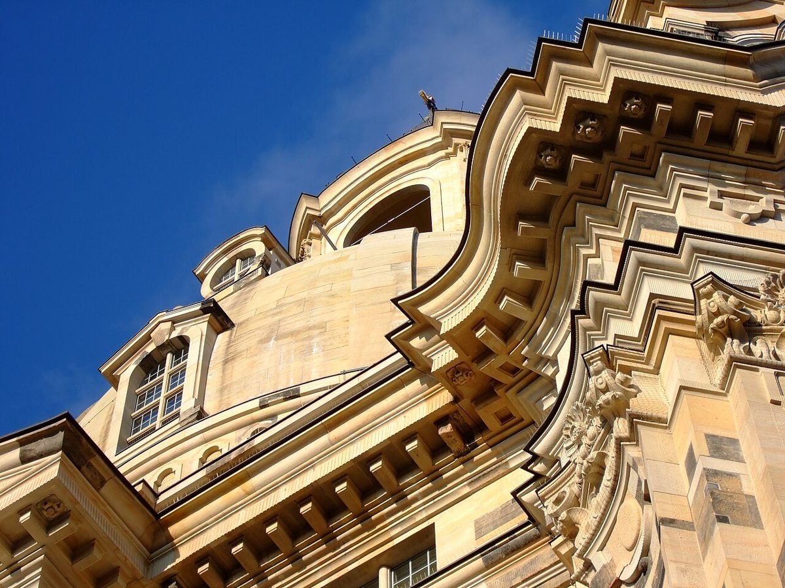

La Frauenkirche de Dresde: Un Joyau Baroque à Découvrir

Symbole de résilience et de beauté baroque, la Frauenkirche (Église Notre-Dame) de Dresde est un monument qui impressionne par son histoire et son architecture. Détruite pendant la Seconde Guerre mondiale puis reconstruite à l'identique, elle incarne aujourd'hui l'esprit de renaissance de la ville. Voici un guide pour en profiter pleinement.
Pourquoi Visiter la Frauenkirche de Dresde ?
Cette église protestante, avec son dôme emblématique et ses façades en grès, est un chef-d'œuvre de l'art baroque. Son intérieur, lumineux et richement décoré, ainsi que sa vue panoramique depuis le dôme, en font une visite incontournable.
Comment S'y Rendre ?
La Frauenkirche est située en plein cœur de Dresde, sur la place Neumarkt. Elle est accessible à pied depuis la gare centrale en 15 minutes, ou en tram (lignes 1, 2, 4, 12) avec l'arrêt "Altmarkt".
Meilleure Période pour Visiter
Le printemps et l'automne offrent des températures agréables pour explorer la ville. En été, les concerts dans l'église ajoutent une touche magique. Noël à Dresde est également féérique, grâce aux marchés traditionnels aux alentours.
3-5 Highlights à ne Pas Manquer
- L'intérieur de l'église : Admirez l'autel impressionnant et l'orgue splendide, marqués par des détails dorés et un plafond ouvragé.
- La montée au dôme (accès payant) : Une vue à couper le souffle sur Dresde et l'Elbe.
- L'histoire de sa reconstruction : Observez les pierres noircies, vestiges de l'ancienne église, intégrées dans la façade.
- Concerts et offices : L'acoustique est exceptionnelle – vérifiez le programme à l'avance.
- La place Neumarkt : Un cadre baroque avec cafés et boutiques charmantes.
Où Manger aux Alentours ?
Goûtez la cuisine saxonne dans les Gasthäuser (auberges) traditionnelles : essayez le Dresdner Eierschecke (gâteau régional) ou un repas au Restaurant Genuss-Atelier, réputé pour ses plats locaux revisités. Pour une pause rapide, les stands de saucisses (Currywurst) près d'Altmarkt sont parfaits.
Conseils Pratiques
- Respectez le silence pendant les offices religieux.
- Privilégiez la visite tôt le matin pour éviter les foules.
- Combinez la visite avec d'autres joyaux de Dresde : le Zwinger, la Semperoper ou la terrasse Brühl.
La Frauenkirche n'est pas qu'un monument – c'est une expérience émouvante, entre histoire, art et spiritualité.
Haiktec
- Le Guide Essentiel des Voyageurs Autonomes : Découvrir le Saarland et la Moselle en 7 Étapes Faciles
- Planificateur d'entraînement intelligent pour coachs et indépendants
- Petit Guide Pratique pour les Propriétaires de 1 à 5 Logements : Organisation et Gestion Simplifiée
Text mit KI erstellt und automatisch geprueft.